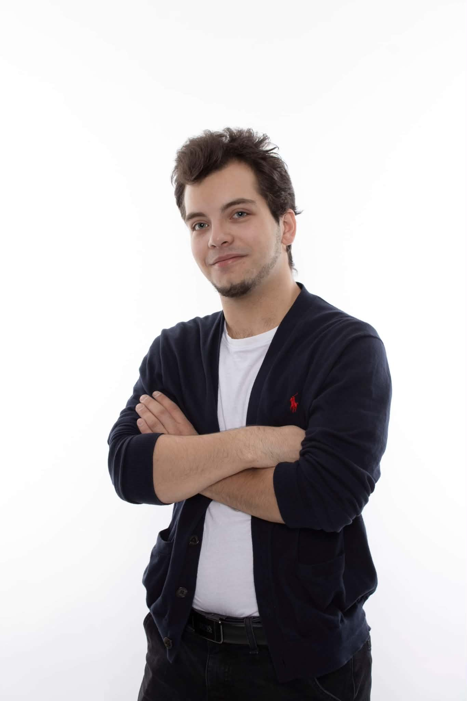
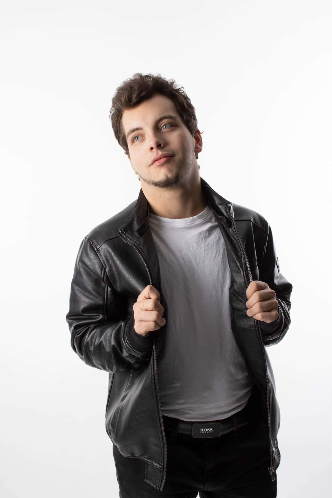

$$$$$$$$
$$$$$$$$
$$$$$$$$
♔
Číslo karty
+420 799 919 042
Držitel karty
artur.kaiser.fs@gmail.com
Dostupný od
16:00
16:00
Kontakt
Telefon: +420 799 919 042
E-mail: artur.kaiser.fs@gmail.com
Dostupný od: 16:00



